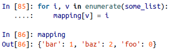
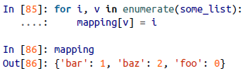
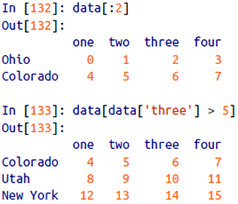
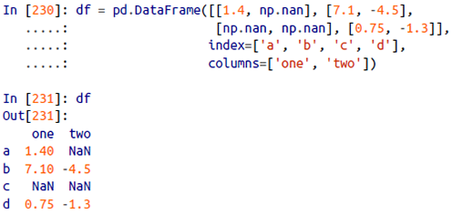
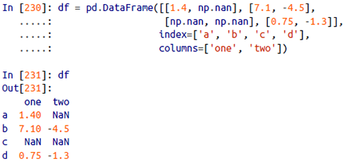
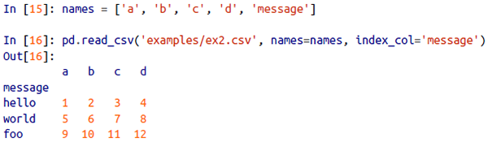
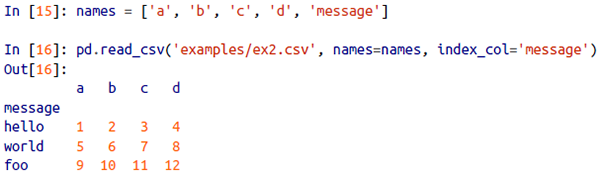

Python for Data Analysis
Wes McKinney
Tab completion:


When assigning a variable in Python, you are creating a reference to the object on the righthand side of the equals sign. In some languages, this assignment would cause the data [1, 2, 3] to be copied; in Python, a and b actually now refer to the same object, the original list [1, 2, 3]:

When you pass objects as arguments to a function, new local variables are created referencing the original objects without any copying:
To check if two references refer to the same object, use the is keyword. is not is also perfectly valid if you want to check that two objects are not the same:

Since list always creates a new Python list (i.e., a copy), we can be sure that c is distinct from a. Comparing with is is not the same as the == operator, because in this case we have:
A very common use of is and is not is to check if a variable is None, since there is only one instance of None:
None is a common default value for function arguments:

pass can be used in blocks where no action is to be taken (or as a placeholder for code not yet implemented); it is only required because Python uses whitespace to delimit blocks:

The range function returns an iterator that yields a sequence of evenly spaced integers:

Both a start, end, and step (which may be negative) can be given:

As you can see, range produces integers up to but not including the endpoint. A common use of range is for iterating through sequences by index:

A ternary expression in Python allows you to combine an if-else block that produces a value into a single line or expression:

Unpacking tuples:
Even sequences with nested tuples can be unpacked:

To swap variable names:

A common use of variable unpacking is iterating over sequences of tuples or lists:
The Python language recently acquired some more advanced tuple unpacking to help with situations where you may want to "pluck" a few elements from the beginning of a tuple. This uses the special syntax *rest, which is also used in function signatures to capture an arbitrarily long list of positional arguments:
This rest bit is sometimes something you want to discard; there is nothing special about the rest name. As a matter of convention, many Python programmers will use the underscore (_) for unwanted variables:
Since the size and contents of a tuple cannot be modified, it is very light on instance methods. A particularly useful one (also available on lists) is count, which counts the number of occurrences of a value:
Elements can be appended to the end of the list with the append method:
Using insert you can insert an element at a specific location in the list:
The inverse operation to insert is pop, which removes and returns an element at a particular index:

Elements can be removed by value with remove, which locates the first such value and removes it from the last:
Check if a list contains a value using the in keyword:
The keyword not can be used to negate in:
If you have a list already defined, you can append multiple elements to it using the extend method:
You can sort a list in-place (without creating a new object) by calling its sort function:

You can select sections of most sequence types by using slice notation, which in its basic form consists of start:stop passed to the indexing operator []:

Slices can also be assigned to with a sequence:
While the element at the start index is included, the stop index is not included, so that the number of elements in the result is stop - start.
Either the start or stop can be omitted, in which case they default to the start of the sequence and the end of the sequence, respectively:

Negative indices slice the sequence relative to the end:

A step can also be used after a second colon to, say, take every other element:

It's common when iterating over a sequence to want to keep track of the index of the current item:
Since this is so common, Python has a built-in function, enumerate, which returns a sequence of (i, value) tuples:

 

The sorted function returns a new sorted list from the elements of any sequence:


You can check if a dict contains a key using the same syntax used for checking whether a list or tuple contains a value:
You can delete values either using the del keyword or the pop method (which simultaneously returns the value and deletes the key):

The keys and values method give you iterators of the dict's keys and values, respectively:
You can merge one dict into another using the update method:

A list comprehension looks like this:


A dict comprehension looks like this:
There is no issue with having multiple return statements. If Python reaches the end of a function without encountering a return statement, None is returned automatically.
Each function can have positional arguments and keyword arguments. Keyword arguments are most commonly used to specify default values or optional arguments. In the preceding function, x and y are positional arguments while z is a keyword argument. This means that the function can be called in any of these ways:

The main restriction on function arguments is that the keyword arguments must follow the positional arguments (if any).
It is possible to use keywords for passing positional arguments as well:
To declare an anonymous (lambda) function:

The easiest way to create an array is to use the array function:

Nested sequences, like a list of equal-length lists, will be converted into a multidimensional array:
zeros and ones create arrays of 0s or 1s, respectively, with a given length or shape, empty creates an array without initializing its values to any particular value:
It's not safe to assume that np.empty will return an array of all zeros. In some cases, it may return uninitialized "garbage" values.
You can explicitly convert or cast an array from one dtype to another using ndarray's astype method:

Calling astype always creates a new array (a copy of the data), even if the new dtype is the same as the old dtype.
Arrays are important because they enable you to express batch operations on data without writing any for loops. NumPy users call this vectorization.

Array slices are views on the original array; this means that the data is not copied, and any modifications to the view will be reflected in the source array:


The "bare" slice [:] will assign to all values in an array:

As NumPy has been designed to be able to work with very large arrays, you could imagine performance and memory problems if NumPy insisted on always copying data. If you want a copy of a slice of an ndarray instead of a view, you will need to explicitly copy the array - for example, arr[5:8].copy().


This expression is the same as though we had indexed in two steps:
You can pass multiple slices just like you can pass multiple indexes:

Suppose each name corresponds to a row in the data array and we wanted to select all the rows with corresponding name "Bob". Like arithmetic operations, comparisons (such as ==) with arrays are also vectorized. Thus, comparing names with the string "Bob" yields a boolean array:
This boolean array can be passed when indexing the array:

To select everything but "Bob", you can either use != or negate the condition using ~:
The ~ operator can be useful when you want to invert a general condition:
Selecting two of the three names to combine multiple boolean conditions, use boolean arithmetic operators like & (and) and | (or):
Selecting data from an array by boolean indexing always creates a copy of the data, even if the returned array is unchanged.
Setting values with boolean arrays works in a common-sense way. To set all of the negative values in data to 0 we need only do:

Setting whole rows or columns using a one-dimensional boolean array is also easy:
A universal function, or ufunc, is a function that performs element-wise operations on data in ndarrays.
Many ufuncs are simple element-wise transformations, like sqrt or exp. These are referred to as unary ufuncs:

Others, such as add or maximum, take two arrays (thus, binary ufuncs) and return a single array as the result:

The numpy.where function is a vectorized version of the ternary expression x if condition else y:
Suppose we wanted to take a value from xarr whenever the corresponding value in cond is True, and otherwise take the value from yarr. A list comprehension doing this might look like:
This has multiple problems. First, it will not be very fast for large arrays (because all the work is being done in interpreted Python code). Second, it will not work with multidimensional arrays. With np.where you can write this very concisely:
The second and third arguments to np.where don't need to be arrays; one or both of them can be scalars. A typical use of where in data analysis is to produce a new array of values based on another array. Suppose you had a matrix of randomly generated data and you wanted to replace all positive values with 2 and all negative values with -2:

You can combine scalars and arrays when using np.where:

A set of mathematical functions that compute statistics about an entire array or about the data along an axis are accessible as methods of the array class. You can use aggregations (often called reductions) like sum, mean, and std (standard deviation) either by calling the array instance method or using the top-level NumPy function:

Functions like mean and sum take an optional axis argument that computes the statistic over the given axis, resulting in an array with one fewer dimension:
Here, arr.mean(1) means "compute mean across the columns" where arr.sum(0) means "compute sum down the rows".
Boolean values are coerced to 1 (True) and 0 (False) in the preceding methods. Thus, sum is often used as a means of counting True values in a boolean array:
There are two additional methods, any (tests whether one or more values in an array is True) and all (checks if every value is True), useful especially for boolean arrays:

These methods also work with non-boolean arrays, where non-zero elements evaluate to True.
NumPy has some basic set operations for one-dimensional ndarrays. A commonly used one is np.unique, which returns the sorted unique values in an array:
Another function, np.in1d, tests membership of the values in one array in another, returning a boolean array:
While pandas adopts many coding idioms from NumPy, the biggest difference is that pandas is designed for working with tabular or heterogeneous data. NumPy, by contrast, is best suited for working with homogeneous numerical array data.
A Series is a one-dimensional array-like object containing a sequence of values (of similar types to NumPy types) and an associated array of data labels, called its index:

Since we did not specify an index for the data, a default one consisting of the integers 0 through N - 1 (where N is the length of the data) is created.
Another way to think about a Series is as a fixed-length, ordered dict, as it is a mapping of index values to data values:
Should you have data contained in a Python dict, you can create a Series from it by passing the dict:
When you are only passing a dict, the index in the resulting Series will have the dict's keys in sorted order. You can override this by passing the dict keys in the order you want them to appear in the resulting Series:
Here, three values found in sdata were placed in the appropriate locations, but since no value for 'California' was found, it appears as NaN (not a number), which is considered in pandas to mark missing or NA values. Since 'Utah' was not included in states, it is excluded from the resulting object.
The isnull and notnull functions in pandas should be used to detect missing data:

Series also has these as instance methods:
A useful Series feature for many applications is that it automatically aligns by index label in arithmetic operations:

A Series's index can be altered in-place by assignment:
A DataFrame represents a rectangular table of data and contains an ordered collection of columns, each of which can be a different value type (numeric, string, boolean, etc.). The DataFrame has both a row and column index; it can be thought of as a dict of Series all sharing the same index.
There are many ways to construct a DataFrame, though one of the most common is from a dict of equal-length lists or NumPy arrays:

The resulting DataFrame will have its index assigned automatically as with Series, and the columns are placed in sorted order:
If you specify a sequence of columns, the DataFrame's columns will be arranged in that order:
If you pass a column that isn't contained in the dict, it will appear with missing values in the result:
A column in a DataFrame can be retrieved as a Series either by dict-like notation or by attribute:

Attribute-like access (e.g., frame2.year) and tab completion of column names in IPython is provided as a convenience. frame2[column] works for any column name, but frame2.column only works when the column name is a valid Python variable name.
Columns can be modified by assignment:


To add a new column of boolean values where the state column equals 'Ohio' (New columns cannot be created with the frame2.eastern syntax.):

The del method can then be used to remove this column:
The column returned from indexing a DataFrame is a view on the underlying data, not a copy. Thus, any in-place modifications to the Series will be reflected in the DataFrame. The column can be explicitly copied with the Series's copy method.
Another common form of data is a nested dict of dicts:
If the nested dict is passed to the DataFrame, pandas will interpret the outer dict keys as the columns and the inner keys as the row indices:
If a DataFrame's index and columns have their name attributes set, these will also be displayed:
Selections with duplicate labels will select all occurrences of that label.
Calling reindex on this Series rearranges the data according to the new index, introducing missing values if any index values were not already present:
For ordered data like time series, it may be desirable to do some interpolation or filling of values when reindexing. The method option allows us to do this, using a method such as ffill, which forward-fills the values:
With DataFrame, reindex can alter either the (row) index, columns, or both. When passed only a sequence, it reindexes the rows in the result:

The columns can be reindexed with the columns keyword:

With DataFrame, index values can be deleted from either axis:

Calling drop with a sequence of labels will drop values from the row labels (axis 0):

You can drop values from the columns by passing axis=1 or axis='columns':

Many functions, like drop, which modify the size or shape of a Series or DataFrame, can manipulate an object in-place without returning a new object:
Series indexing (obj[...]) works analogously to NumPy array indexing, except you can use the Series's index values instead of only integers:


Slicing with labels behaves differently than normal Python slicing in that the endpoint is inclusive:

Indexing like this has a few special cases. First, slicing or selecting data with a boolean array:
Another use case is in indexing with a boolean DataFrame, such as one produced by a scalar comparison:
To select a subset of the rows and columns from a DataFrame with NumPy-like notation using either axis labels (loc) or integers (iloc):


In the case of DataFrame, alignment is performed on both the rows and the columns:
Since the 'c' and 'e' columns are not found in both DataFrame objects, they appear as all missing in the result. The same holds for the rows whose labels are not common to both objects.
In arithmetic operations between differently indexed objects, you might want to fill with a special value, like 0, when an axis label is found in one object but not the other:


By default, arithmetic between DataFrame and Series matches the index of the Series on the DataFrame's columns, broadcasting down the rows:

If an index value is not found in either the DataFrame's columns or the Series's index, the objects will be reindexed to form the union:

If you want to instead broadcast over the columns, matching on the rows, you have to use one of the arithmetic methods:
NumPy ufuncs (element-wise array methods) also work with pandas objects:

Another frequent operation is applying a function on one-dimensional arrays to each column or row. DataFrame's apply method does exactly this:

If you pass axis='columns' to apply, the function will be invoked once per row instead:

The function passed to apply need not return a scalar value; it can also return a Series with multiple values:


Element-wise Python functions can be used, too. Suppose you wanted to compute a formatted string from each floating-point value in frame. You can do this with applymap:
With a DataFrame, you can sort by index on either axis:

To sort a Series by its values, use its sort_values method:

Any missing values are sorted to the end of the Series by default:
When sorting a DataFrame, you can use the data in one or more columns as the sort keys. To do so, pass one or more column names to the by option of sort_values:
The index's is_unique property can tell you whether its labels are unique or not:


 

NA values are excluded unless the entire slice (row or column in this case) is NA. This can be disabled with the skipna option:


The unique values are not necessarily returned in sorted order, but could be sorted after the fact if needed (uniques.sort()). Relatedly, value_counts computes a Series containing value frequencies:

The Series is sorted by value in descending order as a convenience. value_counts is also available as a top-level pandas method that can be used with any array or sequence:
isin performs a vectorized set membership check and can be useful in filtering a dataset down to a subset of values in a Series or column in a DataFrame:

 
For numeric data, pandas uses the floating-point value NaN (Not a Number) to represent missing data. We call this a sentinel value that can be easily detected:
The built-in Python None value is also treated as NA (not available) in object arrays:
On a Series, dropna returns the Series with only the non-null data and index values:
This is equivalent to:
With DataFrame objects, things are a bit more complex. dropna by default drops any row containing a missing value:
Passing how='all' will only drop rows that are all NA:
To drop columns in the same way, pass axis=1:
A related way to filter out DataFrame rows tends to concern time series data. Suppose you want to keep only rows containing a certain number of observations. You can indicate this with the thresh argument:
Rather than filtering out missing data (and potentially discarding other data along with it), you may want to fill in the "holes" in any number of ways. Calling fillna with a constant replaces missing values with that value:
Calling fillna with a dict, you can use a different fill value for each column:
fillna returns a new object, but you can modify the existing object in-place:
The DataFrame method duplicated returns a boolean Series indicating whether each row is a duplicate (has been observed in a previous row) or not:
Relatedly, drop_duplicates returns a DataFrame where the duplicated array is False:
Both of these methods by default consider all of the columns; alternatively, you can specify any subset of them to detect duplicates. Suppose we had an additional column of values and wanted to filter duplicates only based on the 'k1' column:
duplicated and drop_duplicates by default keep the first observed value combination. Passing keep='last' will return the last one:
Suppose you wanted to add a column indicating the type of animal that each food came from:
The map method on a Series accepts a function or dict-like object containing a mapping, but here we have a small problem in that some of the meats are capitalized and others are not:
We could also have passed a function that does all the work:
The -999 values might be sentinel values for missing data. To replace these with NA values that pandas understands, we can use replace, producing a new Series (unless you pass inplace=True):
If you want to replace multiple values at once, you instead pass a list and then the substitute value:
To use a different replacement for each value, pass a list of substitutes:
The argument passed can also be a dict:
If you want to create a transformed version of a dataset without modifying the original, a useful method is rename:
Notably, rename can be used in conjunction with a dict-like object providing new values for a subset of the axis labels:
rename saves you from the chore of copying the DataFrame manually and assigning to its index and columns attributes. Should you wish to modify a dataset in-place, pass inplace=True:


Continuous data is often discretized or otherwise separated into "bins" for analysis. Suppose you have data about a group of people in a study, and you want to group them into discrete age buckets:
Let's divide these into bins of 18 to 25, 26 to 35, 36 to 60, and finally 61 and older. To do so, you have to use cut, a function in pandas:
The object pandas returns is a special Categorical object. The output you see describes the bins computed by pandas.cut. You can treat it like an array of strings indicating the bin name; internally it contains a categories array specifying the distinct category names along with a labeling for the ages data in the codes attribute:
Note that pd.value_counts(cats) are the bin counts for the result of pandas.cut.
Consistent with mathematical notation for intervals, a parenthesis means that the side is open, while the square bracket means it is closed (inclusive). You can change which side is closed by passing right=False:
You can also pass your own bin names by passing a list or array to the labels option:
If you pass an integer number of bins to cut instead of explicit bin edges, it will compute equal-length bins based on the minimum and maximum values in the data. Consider the case of some uniformly distributed data chopped into fourths:
The precision=2 option limits the decimal precision to two digits.
A closely related function, qcut, bins the data based on sample quantiles. Depending on the distribution of the data, using cut will not usually result in each bin having the same number of data points. Since qcut uses sample quantiles instead, by definition you will obtain roughly equal-size bins:
Similar to cut you can pass your own quantiles (numbers between 0 and 1, inclusive):

Suppose you wanted to find values in one of the columns exceeding 3 in absolute value:
To select all rows having a value exceeding 3 or -3, you can use the any method on a boolean DataFrame:
Values can be set based on these criteria. Here is code to cap values outside the interval -3 to 3:
The statement np.sign(data) produces 1 and -1 values based on whether the values in data are positive or negative:
Another type of transformation for statistical modeling or machine learning applications is converting a categorical variable into a "dummy" or "indicator" matrix.
You may want to add a prefix to the columns in the indicator DataFrame, which can then be merged with the other data:
Adding indicator variables for each genre requires a little bit of wrangling. First, we extract the list of unique genres in the dataset:
One way to construct the indicator DataFrame is to start with a DataFrame of all zeros:
Now, iterate through each movie and set entries in each row of dummies to 1. To do this, we use the dummies.columns to compute the column indices for each genre:
Then, we can use .iloc to set values based on these indices:
Then, as before, you can combine this with movies:
A useful recipe for statistical applications is to combine get_dummies with a discretization function like cut:
A comma-separated string can be broken into pieces with split:

split is often combined with strip to trim whitespace (including line breaks):

These substrings could be concatenated together with a two-colon delimiter using addition:
But this isn't a practical generic method. A faster and more Pythonic way is to pass a list or tuple to the join method on the string '::':
Other methods are concerned with locating substrings. Using Pythons in keyword is the best way to detect a substring, though index and find can also be used:
Note the difference between find and index is that index raises an exception if the string isn't found (versus returning 1).
Relatedly, count returns the number of occurrences of a particular substring:
replace will substitute occurrences of one pattern for another. It is commonly used to delete patterns, too, by passing an empty string:
Regular expressions provide a flexible way to search or match (often more complex) string patterns in text. A single expression, commonly called a regex, is a string formed according to the regular expression language.
To split a string with a variable number of whitespace characters (tabs, spaces, and newlines):
When you call re.split('\s+', text), the regular expression is first compiled, and then its split method is called on the passed text. You can compile the regex yourself with re.compile, forming a reusable regex object:
If, instead, you wanted to get a list of all patterns matching the regex, you can use the findall method:
match and search are closely related to findall. While findall returns all matches in a string, search returns only the first match. More rigidly, match only matches at the beginning of the string.
search returns a special match object for the first email address in the text. For the preceding regex, the match object can only tell us the start and end position of the pattern in the string:
regex.match returns None, as it only will match if the pattern occurs at the start of the string:
Relatedly, sub will return a new string with occurrences of the pattern replaced by the a new string:
To find email addresses and simultaneously segment each address into its three components: username, domain name, and domain suffix, put parentheses around the parts of the pattern to segment:
A match object produced by this modified regex returns a tuple of the pattern components with its groups method:
findall returns a list of tuples when the pattern has groups:
sub also has access to groups in each match using special symbols like \1 and \2. The symbol \1 corresponds to the first matched group, \2 corresponds to the second, and so forth:
One of the passed shape dimensions can be -1, in which case the value used for that dimension will be inferred from the data:
The opposite operation of reshape from one-dimensional to a higher dimension is typically known as flattening or raveling:
ravel does not produce a copy of the underlying values if the values in the result were contiguous in the original array. The flatten method behaves like ravel except it always returns a copy of the data:
NumPy gives you control and flexibility over the layout of your data in memory. By default, NumPy arrays are created in row major order. Spatially this means that if you have a two-dimensional array of data, the items in each row of the array are stored in adjacent memory locations. The alternative to row major ordering is column major order, which means that values within each column of data are stored in adjacent memory locations. For historical reasons, row and column major order are also know as C and Fortran order, respectively:
numpy.concatenate takes a sequence (tuple, list, etc.) of arrays and joins them together in order along the input axis:
There are some convenience functions, like vstack and hstack, for common kinds of concatenation:
split, on the other hand, slices apart an array into multiple arrays along an axis:
The value [1, 3] passed to np.split indicate the indices at which to split the array into pieces.
repeat replicates each element in an array some number of times, producing a larger array:

Broadcasting describes how arithmetic works between arrays of different shapes.
Here we say that the scalar value 4 has been broadcast to all of the other elements in the multiplication operation.
Two arrays are compatible for broadcasting if for each trailing dimension (i.e., starting from the end) the axis lengths match or if either of the lengths is 1. Broadcasting is then performed over the missing or length 1 dimensions.
Broadcasting over axis 0 with a 1D array:
Broadcasting over axis 1 of a 2D array:
Broadcasting over axis 0 of a 3D array:
%time runs a statement once, reporting the total execution time:
The Wall time (short for "wall-clock time") is the main number of interest. So, it looks like the first method takes more than twice as long, but it's not a very precise measurement. If you try %time-ing those statements multiple times yourself, you'll find that the results are somewhat variable. To get a more precise measurement, use the %timeit magic function. Given an arbitrary statement, it has a heuristic to run a statement multiple times to produce a more accurate average runtime: